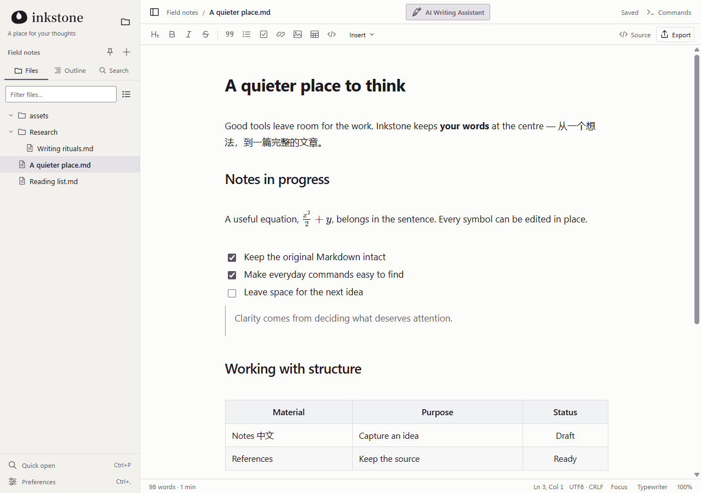
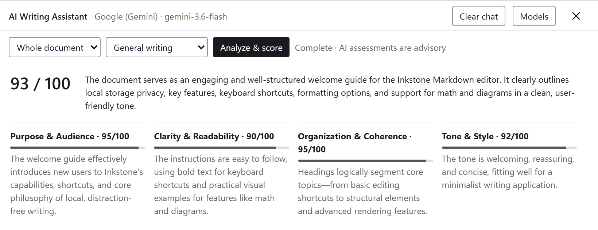
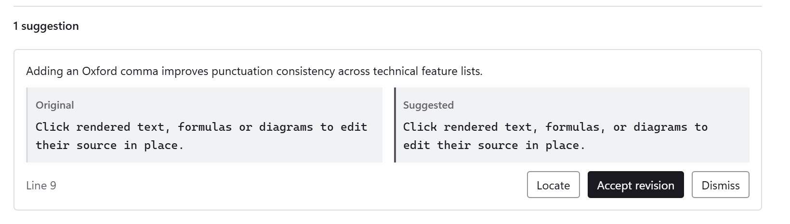
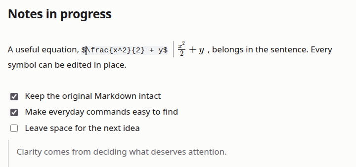
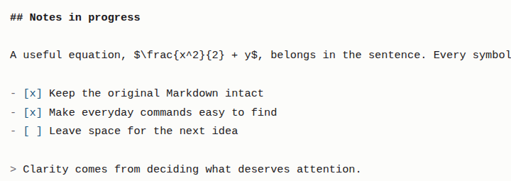
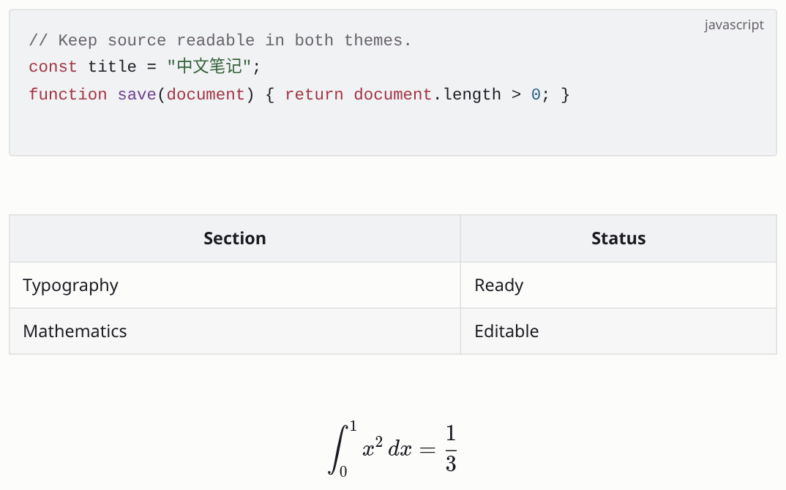
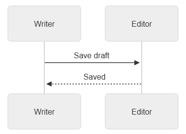
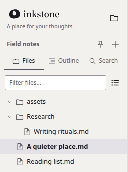

A place for your thoughts
An AI-powered, open-source Markdown editor.
From a one-line note to equations, diagrams and the finished
piece.
- Platform
- Windows x64 · Linux
- Files
- Local .md files, kept as written
- AI
- Optional · local models or your own API key
- Account
- No sign-up, no cloud required
- Interface
- English / 简体中文 · Light / Dark
- License
- Open source, AGPL-3.0

1 2 3 4 51File sidebar
Files, outline and search, right on your local folders.
2Typography
A comfortable measure and line height; mixed English and Chinese stay clear.
3Inline math
Equations sit in the sentence. Click one to edit it.
4Tables
Edit right on the page, no switch to source needed.
5AI Writing Assistant
Scores your draft and suggests revisions in one click.
Features
01 — 04Feedback,
when you ask.
Review the whole document or a selection for an overall score, notes on each dimension and concrete revisions. Every change needs your approval, and any change can be undone.
- Models
- OpenAI, Claude, Gemini, DeepSeek, local models and more (11 in all)
- Review
- Overall score · notes by dimension · revisions
- Your call
- Locate, accept, dismiss or undo, one by one
- Privacy
- Runs only when asked; with a local model, nothing leaves your computer




Writing,
naturally.
Write Markdown directly on the page and watch headings, lists and equations take shape as you type. Click an equation to edit its source. When every character matters, switch to source mode in one step; your selection and undo history stay intact.
- Shortcut
- Ctrl + / Live preview ⇄ Source
- Insert
- Type / at the start of a line for headings, tables, math and more
- Original
- No silent reformatting or rewriting
Thinking,
with structure.
Inline math, LaTeX blocks, editable tables, syntax-highlighted code and Mermaid diagrams all live in one Markdown file and render clearly on the page.
- Math
- Inline $…$ and display $$…$$
- Code
- Syntax highlighting for the language you pick
- Diagrams
- Mermaid flowcharts, sequence diagrams and more



Field notes/ ├── assets/ ├── Research/ │ └── Writing rituals.md ├── A quieter place.md └── Reading list.md
Your files,
close at hand.
Open any folder on your computer and start writing; every document is a plain .md file. No account, no cloud, and writing works offline. When you are done, export to HTML, PDF or PNG.
- Files
- Folders · search · autosave · recovery
- Offline
- Core writing needs no connection
- More formats
- Word and more with Pandoc
Your next piece starts here.
You hold the pen; AI helps you polish. Get the Windows installer, or build for Linux from source.